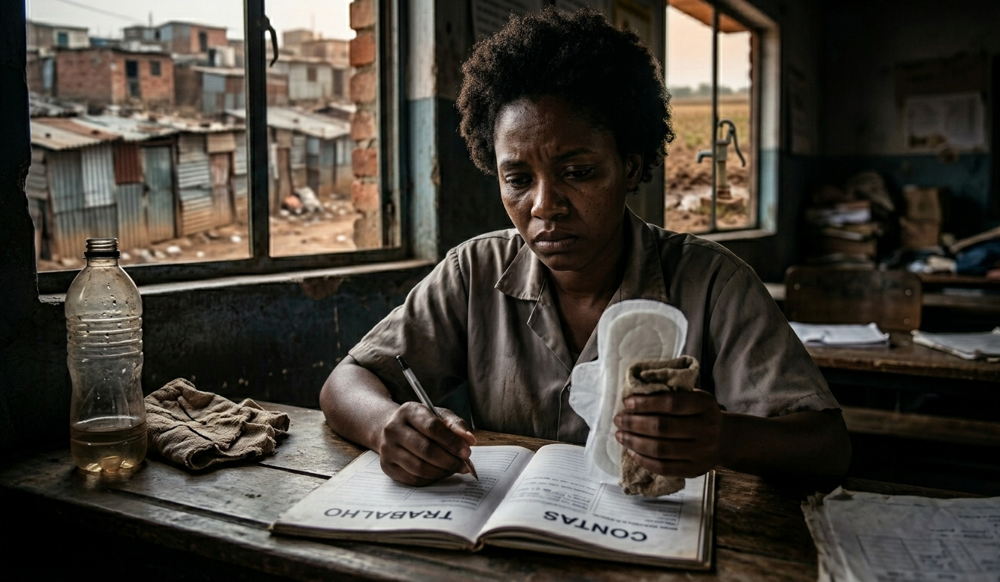
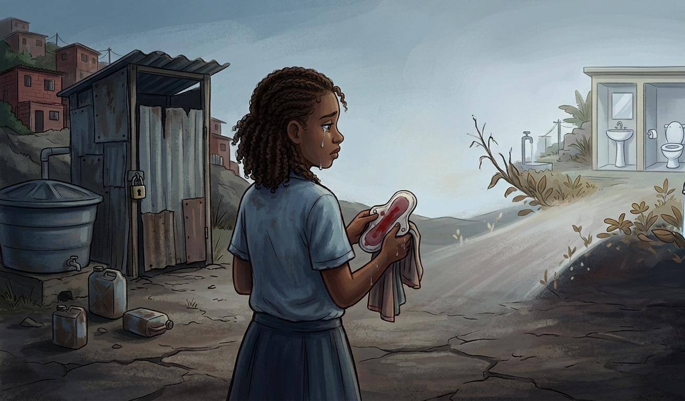

Pobreza Menstrual no Brasil
DIGNIDADE NÃO É PRIVILÉGIO
1 em cada 4 meninas já faltou à escola por não ter absorventes. A desigualdade menstrual é uma questão de saúde pública e direitos humanos.
Conheça os Dados ↓
DIGNIDADE NÃO É PRIVILÉGIO
1 em cada 4 meninas já faltou à escola por não ter absorventes. A desigualdade menstrual é uma questão de saúde pública e direitos humanos.
Conheça os Dados ↓Números que demonstram a urgência do problema
Meninas faltaram à escola por não ter absorventes
1 em cada 4 estudantes
Meninas sem banheiro em casa
Vivendo sem o básico
Meninas sem água encanada
Sem acesso a higiene básica
Improvisaram absorventes
Papel, pano e alternativas inseguras
Pobreza menstrual não é apenas falta de absorventes. É um problema estrutural que envolve a impossibilidade de meninas e mulheres de baixa renda acessarem produtos básicos de higiene, água potável, saneamento e informação durante o período menstrual.
Faltam às aulas durante o período menstrual
1 em cada 4 já faltou à escola
Sem acesso a saneamento básico e infraestrutura
713 mil sem banheiro em casa
Sem água encanada e banheiros adequados
900 mil sem água encanada
Desigualdade racial agrava o problema
3x mais chances de serem afetadas
94% das mulheres de baixa renda não sabem o que é pobreza menstrual


O Brasil é um dos países com maior desigualdade social. A pobreza menstrual não é um problema isolado, mas um sintoma de estruturas históricas de exclusão e desigualdade.
713 mil meninas vivem sem banheiro
Sem acesso básico a um espaço privado para higiene menstrual
900 mil meninas sem água encanada
Impossível manter higiene adequada para a saúde menstrual
Desigualdade Racial Agravada
Meninas negras têm 3x mais chances de não ter acesso
"O problema é estrutural, não individual. Não é falta de vontade das meninas, é falta de políticas públicas."
A pobreza menstrual atinge grupos específicos com maior intensidade
Enfrentam mais frequentemente a falta de absorventes e saneamento adequado nas escolas.
Com falta de infraestrutura de saneamento básico e acesso a produtos.
Sem saneamento básico, água encanada ou acesso a produtos menstruais.
3x mais chances de não ter acesso a itens de higiene.
Sem acesso a higiene pessoal, privacidade ou absorventes.
Enfrentam barreiras adicionais de acesso e autonomia menstrual.
Os impactos reais na vida de meninas e mulheres
45%
Tiveram desempenho escolar prejudicado
50%
Improvisaram absorventes
94%
Não sabem o que é pobreza menstrual
Consequências médicas que podem ser prevenidas
Causa: Umidade excessiva e higiene inadequada
Sintomas: Coceira, ardência, corrimento
Prevenção: Absorventes de qualidade + água limpa
Causa: Falta de higiene e água potável
Sintomas: Ardência ao urinar, urgência
Prevenção: Água encanada e saneamento
Causa: Atrito com absorventes inadequados
Sintomas: Vermelhidão, irritação, dor
Prevenção: Absorventes apropriados
Causa: Absorventes retidos por horas
Sintomas: Febre alta, choque, rash
Prevenção: Trocar absorvente regularmente
Meninas negras têm 3x mais chances
de não ter acesso a itens de higiene menstrual
A pobreza menstrual é profundamente marcada pelo racismo estrutural. Meninas negras e pardas enfrentam não apenas a falta de recursos econômicos, mas também discriminação sistemática que reduz ainda mais seu acesso a direitos básicos.
Maioria entre os vulneráveis
94% das meninas sem acesso em pobreza extrema são negras e pardas
Concentradas em periferias
Comunidades com maior concentração populacional negra têm pior infraestrutura
Empoderamento e Resistência
Movimentos negros liderem ações de dignidade menstrual
Caminhos para resolver a pobreza menstrual no Brasil
Ações governamentais essenciais para garantir direitos menstruais
Ações comunitárias que geram impacto imediato
Produtos reutilizáveis e ecológicos de menor custo
Conhecimento é o primeiro passo para a mudança
Ações concretas que você pode fazer agora
Conhecer seus direitos
Saiba que dignidade menstrual é um direito humano
Buscar informação
Educação sexual abrangente e saúde menstrual
Higiene adequada
Cuidados de higiene quando possível tiver recursos
Denunciar violações
Reportar falta de banheiro ou saneamento nas escolas
Se organizar coletivamente
Conversar com amigas, parentes e comunidade
Conscientizar-se
Entender o problema além do senso comum
Compartilhar informação
Indicar este site e quebrar mitos sobre menstruação
Apoiar ONGs
Doar absorventes, contribuir financeiramente ou com tempo
Exigir políticas públicas
Cobrar do governo medidas e investimentos
Defender direitos
Participar de movimentos sociais por justiça menstrual
Pobreza menstrual é um problema real e urgente, mas solúvel. Com conscientização, ação coletiva e políticas públicas, podemos garantir dignidade menstrual a todas as meninas e mulheres brasileiras.
1 em 4
Meninas faltam à escola
1,6 mi
Meninas sem acesso básico
∞ Potencial
Para transformação